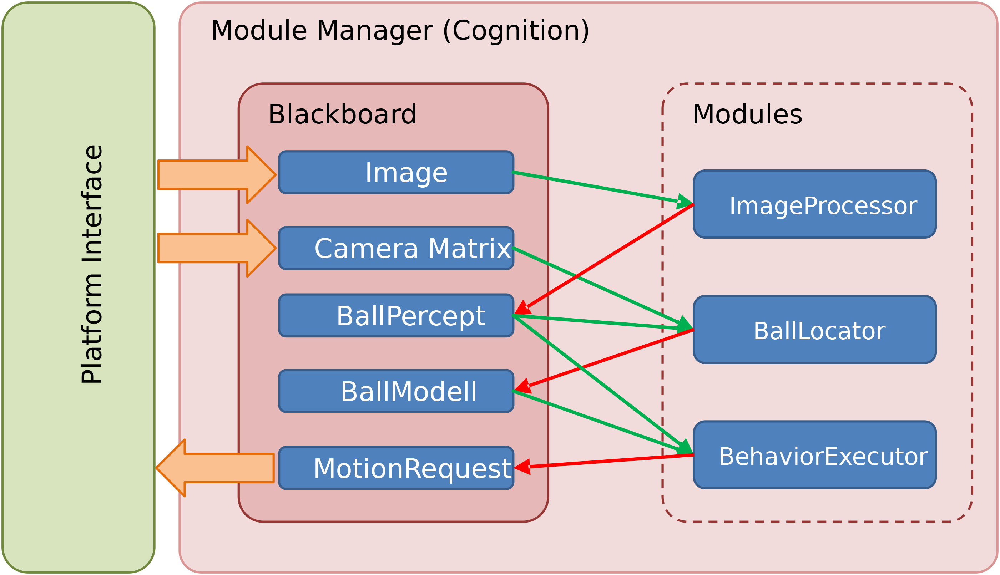

Architecture¶
An appropriate architecture is the base of each successful software project. It enables a group of developers to work at the same project and to organize the solutions for their particular research questions. From this point of view, the artificial intelligence and/or robotics related research projects are usually more complicated than commercial product development, since the actual result of the project is often not clear. Since we use this project also in education, a clear organization of the software is necessary to achieve a fast familiarization with the software. Our software architecture is organized with the main focus on modularity, easy usage, transparency and convenient testing capabilities.
In the following subsections we describe the design and the implementation of different parts of the architecture. A detailed description of the principles we used can also be found in [@Mellmann2010b].
NaoSMAL¶
In our architecture we don't use the NAOqi API directly but use our own so-called NaoSMAL (Nao Shared Memory Abstraction Layer) NAOqi-module. This calls the DCM API of NAOqi and makes it accessible for other processes via a shared memory interface. Thus we can implement our own code as a completely separated executable that has no dependencies to the NAOqi framework. The benefits are a safer operation of the Nao on code crashes (NaoSMAL will continue to run and ensures the robot will go in a stable position), faster redeploy of our binary without restarting NAOqi and a faster compilation since we have fewer dependencies.
Platform Interface¶
In order to integrate different platforms, our project is divided into two parts: a platform independent one and platform specific one. The platform specific part contains code which is applied to the particular robot platform. We support the Nao hardware platform, the SimSpark simulator[^2] and a logfile based simulator. While the platform specific part is a technical abstraction layer the platform independent part is responsible for implementing the actual algorithms. Both parts are connected by the platform interface, which transfers data between the platform independent and specific part
Module framework¶
Our module framework is based on a blackboard architecture. The framework consists of the following basic components:
Representation: objects carrying data and simple manipulation functions
Blackboard: container storing representations as information units
Module: executable unit, has access to the blackboard and can read and write representations
Module Manager: manage the execution of the modules

The above figure describes the interaction between these components. A module may require a representation, in this case it has read-only access to it. A module provides a representation, if it has write access. In our design we consider only sequential execution of the modules, thus there is there is no necessity for handling concurrent access to the blackboard. We decide which representation is required or provided during compilation time. Different modules can implement similar functionality and provide the same representations. You can configure which of the modules should be executed at runtime and it is also possible to dynamically change this for debugging purposes.
Example module¶
A module is a C++ class which inherits a base class which is created with the help of some macros defining the interface of the the module.
#ifndef _MyModule_H
#define _MyModule_H
#include <ModuleFramework/Module.h>
#include <Representations/DataA.h>
#include <Representations/DataB.h>
BEGIN_DECLARE_MODULE(MyModule)
REQUIRE(DataA)
PROVIDE(DataB)
END_DECLARE_MODULE(MyModule)
class MyModule: public MyModuleBase
{
public:
MyModule();
~MyModule();
virtual void execute();
};
#endif /* _MyModule_H */
The MyModule class inherits the MyModuleBase class which was defined
with the BEGIN_DECLARE_MODULE macro. Each representation which is
needed by the module is either declared as provided or required with the
corresponding macro. After declaring a representation it is accessible
with a getter function, which has the name of the representation
prefixed with "get', e.g. getDataA() for the representation DataA.
The actual implementation of the functionality of a module must be in
the execute() function.
#include "MyModule.h"
MyModule::MyModule()
{
// initialize some stuff here
}
MyModule::~MyModule()
{
// clean some stuff here
}
void MyModule::execute()
{
// do some stuff here
getDataB().x = getDataA().y + 1;
}
A representation can be any C++ class, it does not need to inherit any special parent class.
class DataA
{
public:
DataA(){}
int y;
};
class DataB
{
public:
DataB(){}
int x;
};
A module must be registered in the cognition process by including it in
the file NaoTHSoccer/Source/Core/Cognition/Cognition.cpp.
#include "Modules/Experiment/MyModule/MyModule.h"
In the init method add the line:
REGISTER_MODULE(MyModule);
The order of registration defines the order of execution of the modules.
Serialization¶
As described in the Section 2.3 the core of the program is structured in modules which are responsible for different tasks like image processing, world modeling etc.. The modules communicate with each other through the blackboard by writing their results to representations. The representations are mainly pieces of data and have no significant functionality. These representation can be made serializable, which is mainly used in two cases: logging to a file and sending over the network for debug or monitoring reasons.
The backbone of the serialization framework is formed by the Google
Protocol Buffers[^3] (protobuf) library. For a representation to be
serialized (which is described by a C++ class) an according protobuf
message is defined. Please refer to the documentation page of protobuf
for more details on this part. The serialization procedure is then
performed in two steps: first the data is copied from the object which
is to be serialized to the according message object; in the second step
the message object is serialized by a protobuf serializer to a byte
stream. The deserialization process works in reverse order. The second
step is entirely done by the protobuf library. The copy procedure in the
first step, however, has to be defined explicitly. This procedure is
described in the serialize() and deserialize() functions of the
template class Serializer which has to be specified for each
representation to be serialized.
The following listings illustrate the whole code necessary for
serialization of a representation.
Listing [lst:rep_h]{reference-type="ref"
reference="lst:rep_h"} shows the header file MyRepresentation.h
containing the declaration of the representation class DataA and the
according specialization of the serializer Serializer<DataA>.
Listing [lst:proto]{reference-type="ref"
reference="lst:proto"} contains the probobuf message for DataA.
Listing [lst:rep_cpp]{reference-type="ref"
reference="lst:rep_cpp"} illustrates the implementation of the
serialization functions in the file MyRepresentation.cpp.
#include <Tools/DataStructures/Serializer.h>
class DataA
{
public:
DataA()
:
y(0),
time(0.0)
{}
int y;
double time;
};
namespace naoth {
template<>
class Serializer<DataA>
{
public:
static void serialize(const DataA& representation, std::ostream& stream);
static void deserialize(std::istream& stream, DataA& representation);
};
}
package mymessages;
message DataA {
required double time = 1;
required int32 y = 2;
}
#include "MyRepresentation.h"
#include "Messages/mymessages.pb.h"
#include <google/protobuf/io/zero_copy_stream_impl.h>
using namespace naoth;
void Serializer<DataA>::serialize(const DataA& data, std::ostream& stream)
{
// create a new message
messages::DataA msg;
// copy data from the representation to the message
msg.set_y(data.y);
msg.set_time(data.time);
// serialize the message to stream
google::protobuf::io::OstreamOutputStream buf(&stream);
msg.SerializeToZeroCopyStream(&buf);
}
void Serializer<DataA>::deserialize(std::istream& stream, DataA& data)
{
// create a new message
messages::DataA msg;
// decerialize the message from stream
google::protobuf::io::IstreamInputStream buf(&stream);
msg.ParseFromZeroCopyStream(&buf);
// copy data from the message to the data
data.y = msg.y();
data.time = msg.time();
}